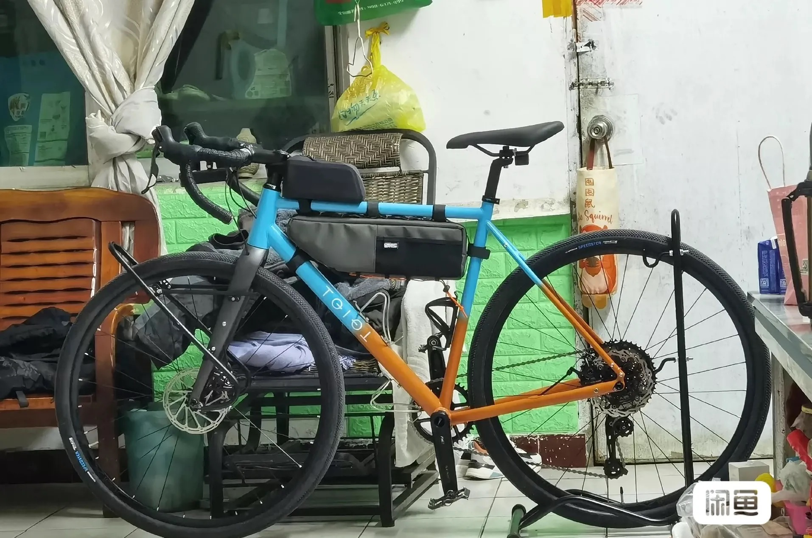
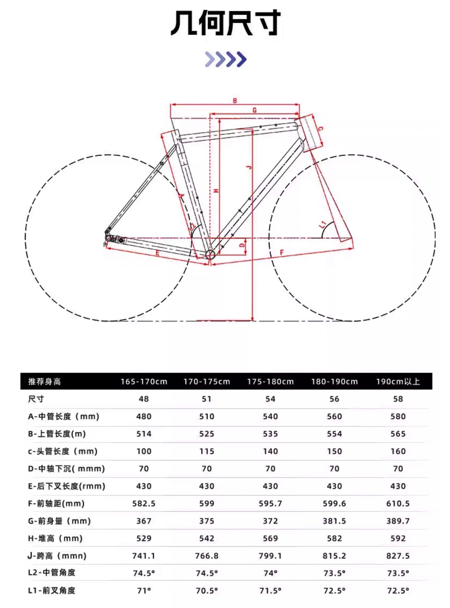
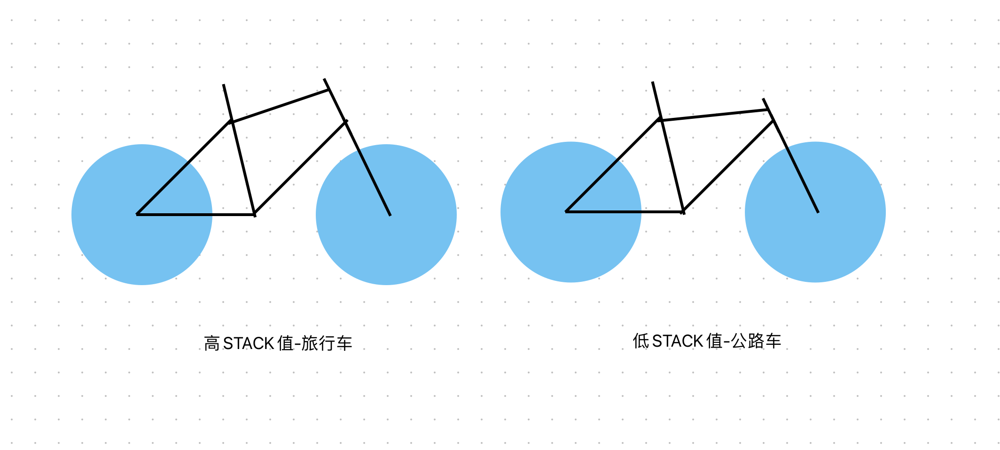
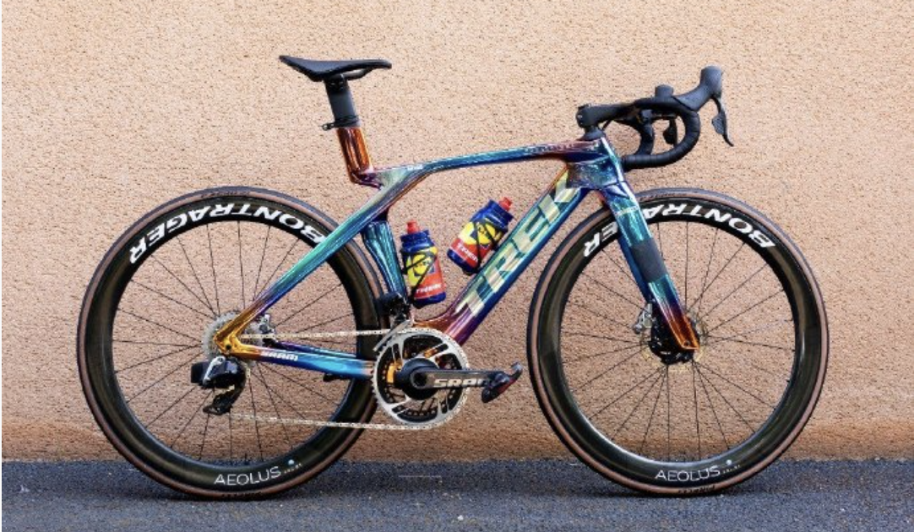

自组单车计划

📑 目录
半年前我的单车被偷了:( 而且再也找不回来
同时我一直想尝试自己动手自组一辆单车，于是在被偷走单车的这半年时间里，一有空闲时间我就看各种评测，研究怎样花最少的钱选到最高的配置。结果越是研究越纠结焦虑，举棋不定。
直到前几天，我从网上看到了一句让我瞬间透彻的话：性能是自行车运动中最不重要的参数，骑行不应当变成一种功利的社交，不需要买一辆不符合自己需求的豪车做入场券。
是的，自行车运动最要紧的是运动，而自组的最大乐趣是折腾，根据自己需求在心仪的价格范围内选购配件并组装...
上面是一些无关紧要的，我单纯想说出来的话，接下来进入正文
我的信息
身高：182cm
身体下肢柔韧性：差
身体蛋高/身体堆高：83cm
身体跨高：90cm
用途：大于4小时的长途旅行、城市通勤、买菜载货
配置单：
选择思路
身体跨高与蛋高的区别：前者是胯骨到脚底的长度，后者是蛋蛋到脚底的长度
车架的堆高（H/STACK值）越高代表车架越偏向于压缩，骑姿放松，适合耐力和柔韧性差的；STACH越低代表车架偏向于水平，骑姿趴下，适合竞技和柔韧性较好的
水平车架的跨高选择建议：身高跨高-车架跨高应当>2.5CM
压缩车架的跨高选择建议：身高跨高-车架跨高应当>4CM
车架的前伸量（G/REACH）决定了骑行时的身体姿态。前伸量越长，则屁股与车把的距离越远，在骑行时身体向前压得更低，或手臂伸得更长，此时骑姿为竞技，车架定义为竞技车架，适合柔韧性好的选手。前伸量短则与之相反，为压缩车架，适合耐久和柔韧性不好的选手。
水平上管长度（B）代表坐垫到车把的距离，其同样能反映车架的类型
柔韧性的评估方法：平躺在地面，身体保持静止不动（主要是腰部），一条腿能够抬起至与地面90度为优秀，45度角为一般，低于45度为柔韧性差
*如果自身柔韧性不好却选择了趴得更低更竞技形的车架，会非常容易骑行时腰痛（亲身经历），特别是应对超过2小时的长时间骑行时。也会影响操控。
*如果身体尺寸正好在两个尺码之间，可以根据柔韧性和需求进行选择，柔韧性好的可以选择两者之间的小车架，柔韧性差的建议选择大车架。虽然可以通过后期给车把加垫圈提高堆高值，但垫圈能加多少？会不会影响稳定性？
*前伸量的选择除了柔韧性和用途，也与臂长有关
*大小腿长度比例也会影响车架和坐管的选择
*车架的跨高J值，不建议低于身体的stack值
>>> 参考资料：[https://www.bilibili.com/video/BV1mK4y147Au](https://www.bilibili.com/video/BV1mK4y147Au?t=443.9)
👇这是适用于身高很高、柔韧性非常不错，并且追求速度的选手的一种特制化的车架
自行车相关阅读推荐：
Shimano山地自行车变速系统介绍-20240129 - 我们都是好孩子的文章 - 知乎
https://zhuanlan.zhihu.com/p/680371181
公路车变速系统Shimano各级别产品介绍-20240126 - 我们都是好孩子的文章 - 知乎
https://zhuanlan.zhihu.com/p/679985677
初识自行车各个部件的结构-20240124 - 我们都是好孩子的文章 - 知乎
https://zhuanlan.zhihu.com/p/679322102
《单车圣经》
国外知名自行车厂商-2024-01-22 - 我们都是好孩子的文章 - 知乎
https://zhuanlan.zhihu.com/p/679102390
图文详解自行车的5大组成部分-20240120 - 我们都是好孩子的文章 - 知乎
https://zhuanlan.zhihu.com/p/678716279
一文说清山地车的发展历程-20240118 - 我们都是好孩子的文章 - 知乎
https://zhuanlan.zhihu.com/p/678371183
车架选择：
车架选择：TQIQT-54码-旅行车-钢架
车架尺寸：54码
车架堆高（H/STACK值）：
车架跨高（J/STAND OVER值/站立）：
车架前伸量（G/REACH）：
车架水平上管长度（B）：
车架上管风格（倾斜/水平/压缩/微压缩）：
车架风格（耐力/竞技）：耐力
车架选择：TQIQT-54码-旅行车-钢架
车架尺寸：54码
车架堆高（H/STACK值）：
车架跨高（J/STAND OVER值/站立）：
车架前伸量（G/REACH）：
车架水平上管长度（B）：
车架上管风格（倾斜/水平/压缩/微压缩）：
车架风格（耐力/竞技）：耐力
车架资料：

| 类目 | 配置 | 备选 | 价格（元） |
|---|---|---|---|
| 车架 + 前叉 | TQIQT-54码-旅行车-钢架；前叉 700C*45C 碳纤维 快拆 开档100mm | 1600 | |
| 变速 | 顺泰 SRX Pro 1×12速 油碟小套套件 | 蓝图 GR9 油碟 碳纤维套件 | 1400 |
| 轮组 | MEROCA 700C 铝合金（前20 / 后24 幅条）（前2 / 后4 培林） | KOOZER CX1800 桶轴碟刹砾石轮组（28 / 28）（2 / 4） | 710 |
| 内外胎 | 世文马拉松 700C 7级防刺 + 世文内胎 | 400 | |
| 车把 | UNO FL12 | 60 | |
| 牙盘 + 中轴 + 曲柄 | SENICX 驭勇 FM2 套件 34T 170mm | SENICX 驭勇 GR3 套件 34T 170mm | 158 |
| 链条 | 禧玛诺 CUES U6000 116节 | 50 | |
| 脚踏 | 景晔 铝合金 培林轴承脚踏 K203 | 宏光 VP-566 | 80 |
| 碟片 | 禧玛诺 | 50 | |
| 坐垫 | 女士中间镂空坐垫 | 210 | |
| 飞轮 | 日晖 11速 42T | 100 | |
| 合计 | 4900 | ||

